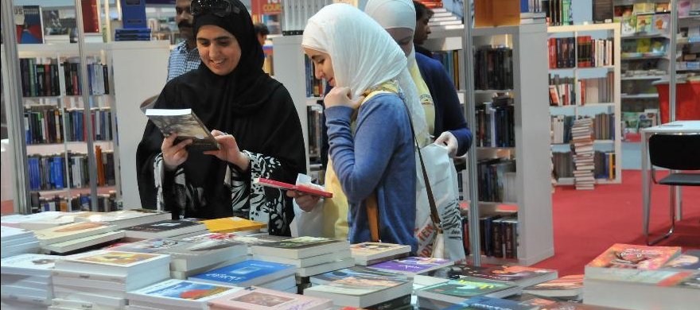
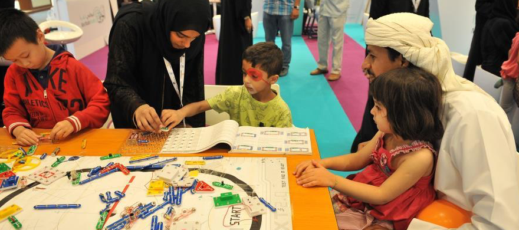

آخر الأخبار
الأحداث القادمة


وزارة الثقافة والشباب وتنمية المجتمع تشارك في "معرض القاهرة الدولي للكتاب" في دورته السابعة والأربعين في 27 كانون الثاني/يناير وحتى 10 شباط/فبراير، بمشاركة 9 من مختلف المؤسسات الثقافية التي تعكس صورة شاملة عن التنوع والطابع الفريد للثقافة الإماراتية ومحتوياته. ويشمل الجناح المطبوعات بوزارة الثقافة والشباب وتنمية المجتمع، المحفوظات الوطنية، الاتحاد مركز الكتاب الإمارات الشيخ سلطان بن زايد الثقافة ووسائل الإعلام ومركز جمعة الماجد للثقافة والتراث، و "الثقافة الفجيرة" وندوة هيئة الإعلام والثقافة والعلوم، وزارة الثقافة والإعلام-حكومة الشارقة ورابطة ناشري الإمارات.
 انتقل إلى موقع ويب
انتقل إلى موقع ويب